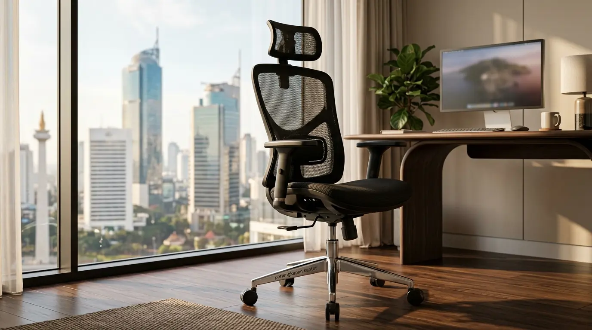

Mengapa Review Kursi WFH Murah Menjadi Perhatian Utama Para Pekerja Jarak Jauh?
Review kursi WFH murah menjadi fokus utama karena banyak pekerja membutuhkan solusi tempat duduk yang nyaman dan terjangkau tanpa mengorbankan kesehatan tulang belakang. Bekerja dari rumah selama kurun waktu 7 hingga 9 jam setiap hari tanpa ditopang struktur duduk yang memadai dapat memicu gangguan muskuloskeletal serius.
Berdasarkan laporan Occupational Health Survey periode 2024–2025, sebanyak 58% pekerja jarak jauh melaporkan timbulnya nyeri punggung bawah akibat menggunakan kursi makan atau kursi lipat standar yang tidak dirancang untuk aktivitas mengetik berjam-jam. Memilih produk yang tepat dari segmen terjangkau menjadi solusi rasional untuk menjaga produktivitas harian.
Pasar perlengkapan kantor saat ini menyediakan berbagai model kursi kerja minimalis berharga di bawah 800 ribu rupiah. Meskipun dipasarkan dengan harga ekonomis, produk pada segmen ini sudah menyertakan mekanisme penyesuaian ketinggian pneumatic hidrolik serta penopang pinggang (lumbar support) pasif. Investasi kecil ini memberikan efek langsung pada kenyamanan tubuh serta fokus kerja harian Anda.
Fitur Ergonomis Apa Saja yang Dapat Ditemukan pada Kursi WFH di Bawah 800 Ribu Rupiah?
Fitur ergonomis pada rentang harga ini mencakup sandaran jaring breathable mesh, penyangga lumbar pasif, dudukan busa cetak berdensitas sedang, serta roda rotasi 360 derajat yang fleksibel:
- Sandaran Jaring (Mesh Backrest): Materi jaring sintetis memungkinkan aliran udara berjalan lancar di area punggung. Hal ini mencegah akumulasi keringat dan hawa panas yang kerap timbul pada sandaran berbahan kulit sintetis murah.
- Penyangga Lumbar Pasif (Passive Lumbar Support): Lengkungan pada bagian bawah sandaran didesain mengikuti kurva alami tulang belakang manusia (lordosis). Penyangga ini menjaga posisi panggul dan mencegah postur membongkok saat mengetik dalam jangka waktu lama.
- Sistem Hidrolik Pneumatic (Gas Lift Class 3): Fitur pengaturan ketinggian memungkinkan telapak kaki pengguna menapak rata di atas lantai. Posisi duduk dengan sudut lutut 90 derajat sangat disarankan untuk melancarkan sirkulasi darah di area kaki.
Data tren perlengkapan kerja rumah tahun 2025 mencatat bahwa penjualan kursi berstruktur mesh pada segmen harga ekonomis mengalami peningkatan sebesar 42% secara tahunan. Pengguna menilai kombinasi bobot ringan dan kepraktisan menjadi alasan utama memilih model ini untuk area kerja terbatas di apartemen atau rumah minimalis.

Kursi kerja WFH minimalis di bawah 800 ribu rupiah dengan desain modern yang mudah dipadukan pada berbagai tema ruang kerja.
Bagaimanakah Perbandingan Performa antara Kursi Kerja Mesh Terjangkau dan Kursi Kantor Konvensional?
Perbandingan menunjukkan bahwa kursi mesh terjangkau lebih unggul dalam hal sirkulasi udara dan fleksibilitas bobot, sedangkan kursi konvensional non-ergonomis cenderung menimbulkan hawa panas berlebih saat digunakan seharian:
| Parameter Evaluasi | Kursi WFH Mesh < 800 Ribu | Kursi Busa Konvensional |
|---|---|---|
| Sirkulasi Udara Sandaran | Sangat Tinggi (Adem) | Rendah (Cenderung Panas) |
| Penyesuaian Ketinggian | Hidrolik Pneumatic | Manual / Fixed |
| Penyangga Tulang Belakang | Lengkungan Lumbar Pasif | Sandaran Datar / Tanpa Kurva |
| Penghematan Ruang | Sangat Baik (Kompak) | Sedang (Memakan Ruang) |
| Ketahanan Beban Maksimal | 90 – 110 kg | 70 – 90 kg |
- Mengatur ketinggian kursi sehingga lengan membentuk sudut 90–100 derajat terhadap meja dapat mencegah ketegangan otot bahu dan leher (*trapezius strain*).
- Kombinasi kursi kerja jaring mesh dengan alas kaki (*footrest*) dapat meningkatkan kenyamanan bagi pengguna berpostur lebih pendek.
- Rutin melakukan peregangan ringan setiap 45–60 menit bekerja sangat dianjurkan untuk memperlancar peredaran darah.
Apa Saja Kelebihan dan Kekurangan yang Perlu Dipertimbangkan Sebelum Membeli Kursi WFH Murah?
Kelebihan utama meliputi harga yang ekonomis, desain minimalis yang hemat ruang, dan efisiensi sirkulasi udara, sementara kekurangannya terletak pada keterbatasan kustomisasi sandaran tangan:
Kelebihan Kursi WFH Murah:
- Harga Sangat Terjangkau: Sangat ramah di kantong untuk standar fasilitas kerja pribadi maupun alokasi anggaran korporat skala besar.
- Desain Minimalis & Hemat Ruang: Bobot yang ringan dan ukuran ringkas memudahkan penempatan di sudut kamar tidur atau ruang keluarga.
- Perawatan Bahan Mudah: Kain jaring mesh tahan noda dan mudah dibersihkan dari debu harian dengan kemoceng atau vacuum cleaner kecil.
Kekurangan Kursi WFH Murah:
- Sandaran Tangan Bersifat Statis: Sandaran tangan (armrest) umumnya bersifat tetap (fixed) dan tidak dapat diatur naik-turun.
- Ketebalan Busa Sedang: Busa dudukan memiliki tingkat ketebalan 5–7 cm berdensitas medium yang memerlukan pemeliharaan berkala setelah bertahun-tahun penggunaan aktif.
Bagaimanakah Cara Merawat Kursi Kerja WFH Murah agar Awet Digunakan Berjam-jam Setiap Hari?
Perawatan dapat dilakukan dengan membersihkan sela-sela jaring menggunakan penyedot debu kecil, melumasi bagian hidrolik secara berkala, serta tidak melebihi kapasitas beban maksimal.
Meskipun dijual dengan harga ekonomis, perawatan yang baik akan memperpanjang masa pakai unit hingga bertahun-tahun. Pastikan Anda tidak menghentakkan badan saat duduk agar seal tabung gas lift hidrolik tidak cepat aus. Rutin bersihkan roda bawah (*castor wheels*) dari pilinan benang karpet atau rambut rontok agar pergerakan kursi tetap lancar di atas permukaan lantai.
FAQ tentang Review Kursi WFH Murah
Kesimpulan Praktis
Membeli kursi WFH murah di bawah 800 ribu rupiah merupakan langkah tepat bagi siapa saja yang menginginkan kenyamanan kerja maksimal tanpa mengeluarkan anggaran berlebih. Dengan fitur sandaran jaring ergonomis dan penyesuai tinggi hidrolik, kebutuhan postur duduk yang sehat dapat terpenuhi dengan baik. Lengkapi area kerja Anda dengan memilih produk dari penyedia perlengkapan kantor terpercaya untuk mendukung efisiensi dan kesehatan kerja jangka panjang. Dapatkan penawaran terbaik dan produk favorit Anda sekarang juga.

Penulis: Spesialis Ergonomi & Fasilitas Kantor
Tim Konsultan Ergonomi dan Pengadaan Furnitur Kerja di Perlengkapan Kantor. Artikel ini telah ditinjau dan divalidasi oleh Konsultan Kesehatan Kerja Korporat berdasarkan data Occupational Health Survey.